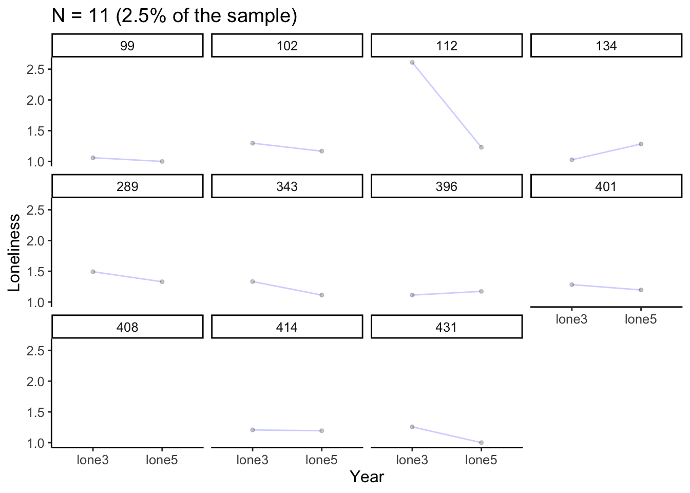
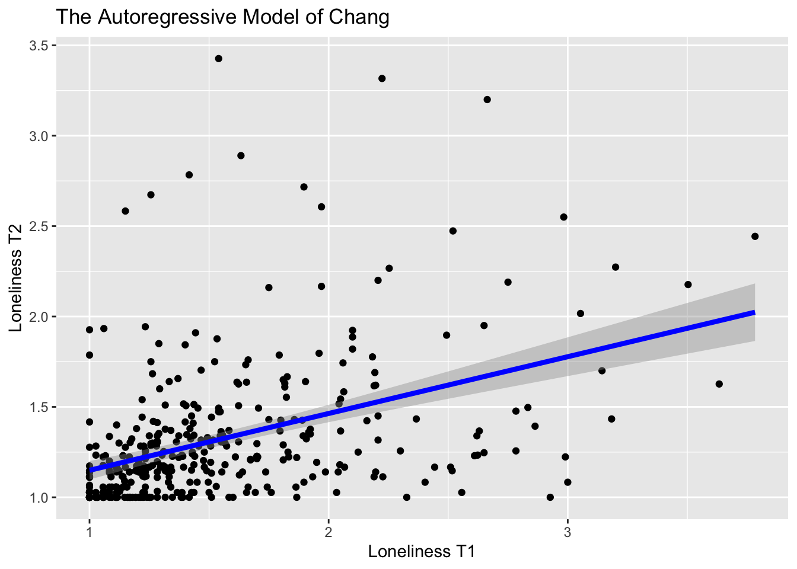

Code
suppressPackageStartupMessages({
library(lcsm) #For analyzing the latent change score model
library(ggplot2) #For visualization
})Frederick Anyan
September 15, 2023
August 30, 2024
This tutorial compares different models of change when presented with data collected at two time points - which could be pre-test and post test data or some other form of observational data.
The Raw Change Model also called the Difference Score Model is probably the most obvious and common. A researcher computes change between two time points by subtracting T1 scores from T2 scores (T2 - T1). Resulting from this subtraction whether greater or lesser is the change that has occurred between two time points. The Difference Score Model examine between-person differences in the change that has occurred within individuals from T1 to T2. Common in this model of change is to use the computed (resulting) change or difference (D), that is, T2 - T1 = D, as an outcome in subsequent analysis - which is why it is often called the Difference Score Model
This approach is, however, heavily criticized and has a rather bad reputation even until today, and started with Cronbach & Furby, 1970
“Raw change” or “raw gain” scores formed by subtracting pretest scores from posttest scores lead to fallacious conclusions, primarily because such scores are systematically related to any random error of measurement. Although the unsuitability of such scores has long been discussed, they are still employed, even by some otherwise sophisticated investigators. Cronbach & Furby, 1970, p. 68
The Difference Score Model is badly reputed mainly for the following:
Some authors have suggested ways to mitigate the problems of the Difference Score Model including, to account for the confounding effects of T1 when using the computed D scores in subsequent analysis. See Rogosa & Willett, 1983; Gottman & Rushe, 1993
The Autoregressive Model of Change focuses on the end state by using T2 as the DV and T1 as the predictor. This model responds to questions about individual differences in change by regressing T2 on T1, and does not answer questions about intraindividual change same as for many panel models. The regression coefficient resulting from regressing a variable at later time point on itself at an earlier time point is called the autoregressive effect. In this case, the regression of T2 on T1 is the autoregressive effect, which describes the stability of individual differences from T1 to T2.
The Autoregressive Model of Change has had some appeal since the 70s and obviously since the criticisms of the Difference Score Model by Cronbach & Furby, 1970, p. 68. The appealing feature of the The Autoregressive Model of Change stems from the fact that when T2 is regressed on T1 (autoregressive effect), the remaining variance or the residual variance in T2 can be predicted by other variables in which case, this becomes the prediction of the stable portion of variable T, say our variable is T measured at T1 and T2. This is what cross-lagged effects are most useful for, as for example, T2 can be regressed on both T1 and X1, which means X1 will predict T2 when controlling for prior levels of T at T1. So, X1 effectively predicts the stable portion or the residual variance of T (at T2) - which is why this mode is sometimes called residual change model.
In the Autoregressive Cross-lagged Panel Models, controlling for prior levels of a variable while predicting the residual variance by another variable allows a researcher to rule out the possibility that a cross-lagged effect is confounded by the fact that the predictor (X) and outcome (T) are both correlated at T1. That is, the reason X1 predicts T2 is because X and T are correlated at T1 - this cannot hold when controlling for the prior levels of T. Most Autoregressive Model of Change and the Autoregressive Cross-lagged Panel Models have appeared in both observed or latent variable modeling.
The Latent Difference Score also called the Latent Change Score Model is seen by some methodologists as a framework on its own for modelling change with the capability for testing within-person change hypotheses and between-person differences in within-person change. Like the Autoregressive Models of Change, this Latent Change Score Model can accommodate bivariate information in which two variables are modeled concurrently with cross-lagged effects. The Latent Change Score Model starts by decomposing an observed variable into a latent true score and a latent residual score. This model incorporates the autoregressive effect into the latent true score such that the true score at T2 is a function of the latent true score at T1, plus the amount of change that has occurred between T1 and T2. The Latent Change Score Model extends over four successive models of change namely, no change, constant change, proportional change and dual change. The dual change combines both constant and proportional change components. In my opinion, the Latent Change Score Model is useful when bivariate information is incorporated thereby responding to questions about the nature and sequence of subsequent changes in x versus y. In other words, which variable between x and y is a leading indicator of subsequent changes in the other variable?
Researchers must think very carefully of their theories of change when selecting between the different existing models. The Latent Change Score Model while offering greater flexibility in modelling within-person changes and between-person differences in within-person change, emphasizes time-dependent associations when bivariate or multivariate information is incorporated, and this must be carefully considered to benefit from this modelling framework.
Load packages
suppressPackageStartupMessages({
library(lcsm) #For analyzing the latent change score model
library(ggplot2) #For visualization
})Read data
Determine the difference score (T2-T1 = D)
data$lonediff <- data$loneT2-data$loneT1 #You can attach the new variable lonediff to the data with $Now regress D on T1
Call:
lm(formula = lonediff ~ 1 + loneT1, data = data, na.action = na.exclude)
Residuals:
Min 1Q Median 3Q Max
-0.75462 -0.17873 -0.07593 0.08014 2.10763
Coefficients:
Estimate Std. Error t value Pr(>|t|)
(Intercept) 0.83528 0.05658 14.76 <2e-16 ***
loneT1 -0.68587 0.03502 -19.59 <2e-16 ***
---
Signif. codes: 0 '***' 0.001 '**' 0.01 '*' 0.05 '.' 0.1 ' ' 1
Residual standard error: 0.3489 on 367 degrees of freedom
(73 observations deleted due to missingness)
Multiple R-squared: 0.5111, Adjusted R-squared: 0.5098
F-statistic: 383.7 on 1 and 367 DF, p-value: < 2.2e-16The Intercept (0.83) is the expected value of the change in loneliness for an individual with a score of 0 = at T1. The slope of loneT1 indicates the expected negative difference in within-person change (-0.68) for a unit change in loneliness at T1.
ggplot(data = data, aes(x = loneT1, y = lonediff)) +
geom_point() +
geom_smooth(method = "lm", formula = y ~ 1 + x,
se = TRUE, fullrange = TRUE, color = "blue", linewidth = 1.5) +
xlab("Loneliness T1") +
ylab("Difference in Loneliness T2 and T1") +
ggtitle("The Difference score Model")Warning: Removed 73 rows containing non-finite outside the scale range
(`stat_smooth()`).Warning: Removed 73 rows containing missing values or values outside the scale range
(`geom_point()`).
The plot above represents the slope better.
Regress T2 on T1
Call:
lm(formula = loneT2 ~ 1 + loneT1, data = data, na.action = na.exclude)
Residuals:
Min 1Q Median 3Q Max
-0.75462 -0.17873 -0.07593 0.08014 2.10763
Coefficients:
Estimate Std. Error t value Pr(>|t|)
(Intercept) 0.83528 0.05658 14.762 <2e-16 ***
loneT1 0.31413 0.03502 8.971 <2e-16 ***
---
Signif. codes: 0 '***' 0.001 '**' 0.01 '*' 0.05 '.' 0.1 ' ' 1
Residual standard error: 0.3489 on 367 degrees of freedom
(73 observations deleted due to missingness)
Multiple R-squared: 0.1798, Adjusted R-squared: 0.1776
F-statistic: 80.48 on 1 and 367 DF, p-value: < 2.2e-16The Intercept (0.83) is the expected value of loneliness at T2 for an individual with a score of 0 = at T1. The slope of loneT1 (0.31) indicates the stability of between-person differences from T1 to T2. The autoregressive coefficient show that individual differences in loneliness is moderately stable between the two time points as the autoregressive coefficient is about moderate size.
Remember T1 and T2 were originally (lone3 at T3) and (lone5 at T5), which means that the distance between time points is longer than it would be for adjacent time points (lone3 at T3 and lone4 at T4 versus lone4 at T4 and lone5 at T5). The longer time that elapses between measurement occasions, the higher it is that the autoregressive effect dissipates and thereby resulting in less stability of individual differences from one occasion to the next. Therefore, the time lag between time points is very crucial in panel models since this may have implications for when hypothesized autoregressive or cross-lagged effects may disappear.
Alternatively, we expect a positive difference of (0.31) in loneliness at T2 for a every unit change in loneliness at T1
ggplot(data = data, aes(x = loneT1, y = loneT2)) +
geom_point() +
geom_smooth(method = "lm", formula= y ~ 1 + x,
se = TRUE, fullrange = TRUE, color="blue", linewidth = 1.5) +
xlab("Loneliness T1") +
ylab("Loneliness T2") +
ggtitle("The Autoregressive Model of Chang")Warning: Removed 73 rows containing non-finite outside the scale range
(`stat_smooth()`).Warning: Removed 73 rows containing missing values or values outside the scale range
(`geom_point()`).
The plot represents the expected positive difference in loneliness at T2 for a every unit change in loneliness at T1
TBC